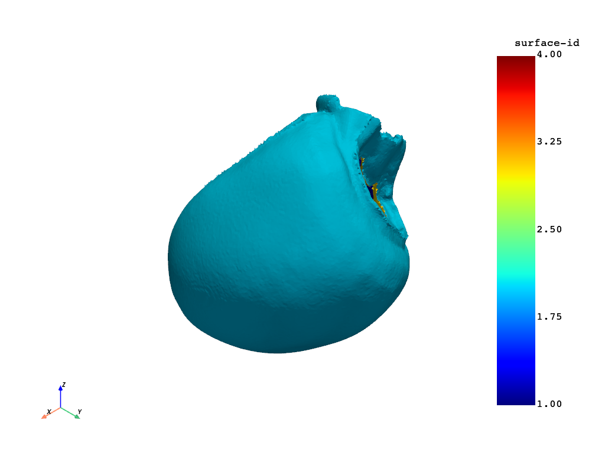
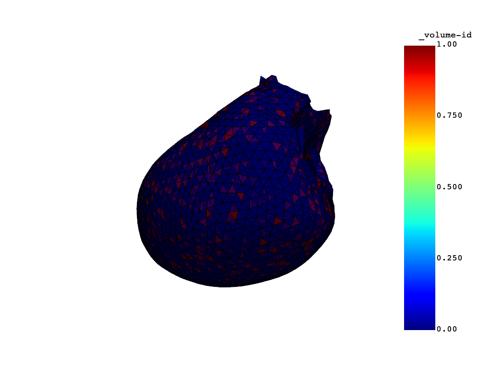
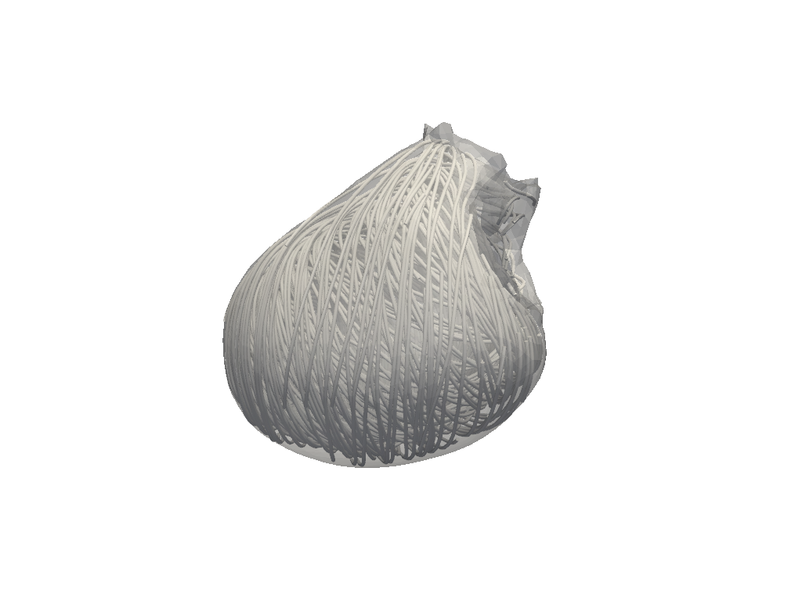
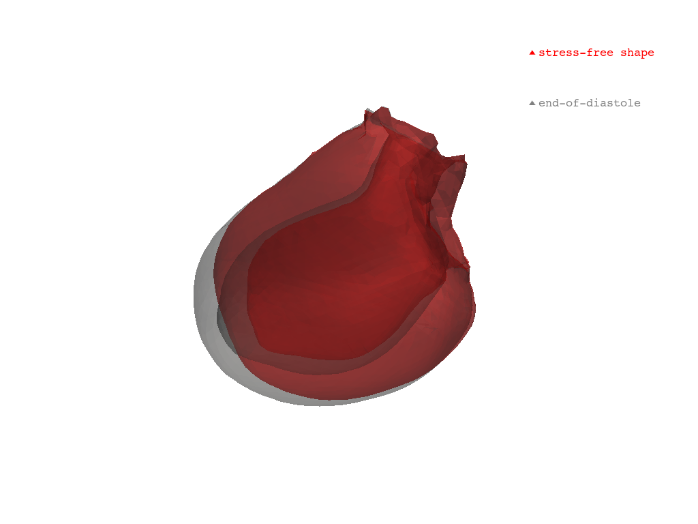
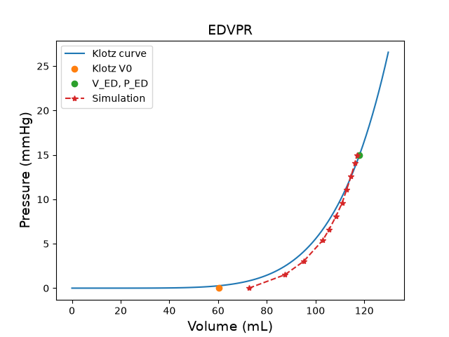
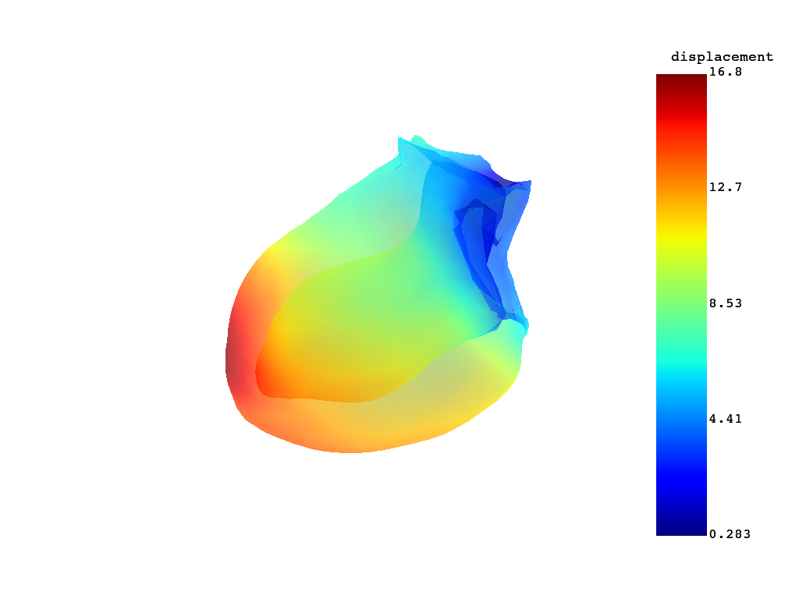
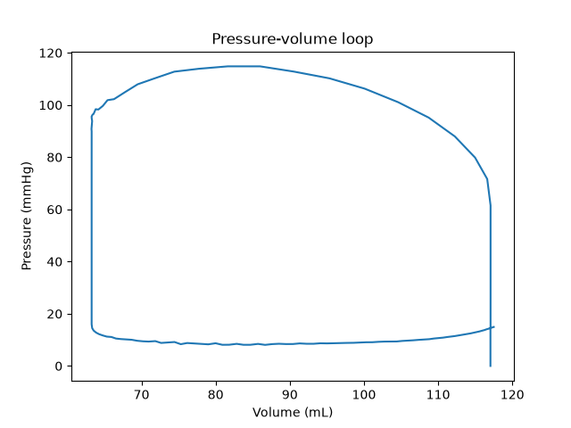

Note
Go to the end to download the full example code.
Run a left ventricle mechanical simulation#
This example shows you how to perform the following actions:
Generate a left-ventricle model from a labeled surface.
Set up the model for mechanical simulation:
Generate fibers.
Assign material.
Tune boundary conditions.
Compute stress-free configuration.
Run the simulation for one heartbeat.
Postprocess the results:
Plot the stress-free configuration versus the end-diastole configuration.
Plot the Klotz curve.
Animate the simulation results.
Plot the PV loop.
Warning
When using a standalone version of the DPF Server, you must accept the license terms. To accept these terms, you can set this environment variable:
import os
os.environ["ANSYS_DPF_ACCEPT_LA"] = "Y"
Perform the required imports#
Import the required modules and set relevant paths, including that of the working directory, heart model, and LS-DYNA executable file.
import copy
import glob
import json
import os
from pathlib import Path
import time
import matplotlib.pyplot as plt
from pint import Quantity
import pyvista as pv
from ansys.health.heart.examples import get_input_leftventricle
import ansys.health.heart.models as models
from ansys.health.heart.post.dpf_utils import ICVoutReader
from ansys.health.heart.settings.material.material import ACTIVE, ANISO, ISO, HGOFiber, Mat295
from ansys.health.heart.settings.settings import FibersDRBM
from ansys.health.heart.simulator import DynaSettings, MechanicsSimulator
Get the model input surface and part definitions#
path_to_surface, path_to_part_definitions = get_input_leftventricle()
# Plot the input surface.
surface = pv.read(path_to_surface)
surface.plot()
# Load and print the parts defined in the JSON file.
with open(path_to_part_definitions, "r") as f:
part_definitions = json.load(f)
# Print the part definitions using indentation for better readability.
print(json.dumps(part_definitions, indent=4))

{
"Left ventricle": {
"id": 1,
"enclosed_by_boundaries": {
"left-ventricle-endocardium": 1,
"left-ventricle-epicardium": 2,
"interface_left-ventricle-myocardium_mitral-valve-plane": 3,
"interface_left-ventricle-myocardium_aortic-valve-plane": 4
}
}
}
Load the input surface and mesh the model.#
Set the working directory.
workdir = (
Path.home() / "pyansys-heart" / "downloads" / "Rodero2021" / "01" / "LeftVentricle-simulation"
)
# Initialize a left ventricle model.
model: models.LeftVentricle = models.LeftVentricle(working_directory=workdir)
# Load the input surface.
model.load_input(surface, part_definitions, scalar="surface-id")
# Mesh the volume.
model.mesh_volume(use_wrapper=True, global_mesh_size=4.0, _global_wrap_size=4.0)
# Update the model.
model.update()
# Plot the mesh.
model.plot_mesh()

C:\Users\ansys\actions-runner\_work\pyansys-heart\pyansys-heart\.tox\doc-html\Lib\site-packages\ansys\health\heart\utils\vtk_utils.py:149: PyVistaDeprecationWarning: This filter is deprecated. Use `select_interior_points` instead.
centroids = centroids.select_enclosed_points(surface, tolerance=tolerance, check_surface=True)
Note
This mesh is very coarse for and for demonstration purposes. In practice, the mesh size should be smaller.
Instantiate the simulator#
Instantiate the simulator and define settings.
# Specify the LS-DYNA path.
lsdyna_path = r"ls-dyna_mpp"
# Instantiate LS-DYNA settings.
dyna_settings = DynaSettings(
lsdyna_path=lsdyna_path, dynatype="intelmpi", num_cpus=2, platform="windows"
)
# Instantiate the simulator, modifying options as necessary.
simulator = MechanicsSimulator(
model=model,
dyna_settings=dyna_settings,
simulation_directory=os.path.join(workdir, "simulation-mechanics"),
)
Load simulation settings#
Load the default settings.
simulator.settings.load_defaults()
Compute fiber orientation#
Compute fiber orientation and plot the fibers.
# Use default rotation angles for the D-RBM method.
fiber_settings = FibersDRBM()
# Print settings
print(fiber_settings)
simulator.compute_fibers(fiber_settings=fiber_settings)
# Plot the fiber orientation by streamlines.
simulator.model.plot_fibers(n_seed_points=2000)

left_ventricle=BaseFiberSettings:
alpha_endo: 60 degree
alpha_epi: -60 degree
beta_endo: -20 degree
beta_epi: 20 degree
right_ventricle=BaseFiberSettings:
alpha_endo: -90 degree
alpha_epi: 25 degree
beta_endo: 0 degree
beta_epi: 20 degree
alpha_outflow_tract=None beta_outflow_tract=None septal_fraction=0.6666666666666666
<pyvista.plotting.plotter.Plotter object at 0x000001E2A63FE210>
Note
The D-RBM method is based on Doste et al. (2021) and in this implementation the rotation of the local coordinate system follows the right hand rule, where the transmural direction is pointing from endocardium to epicardium, the longitudinal direction is pointing from apex to base. Consequently, the circumferential direction is orthogonal to both and follows from the cross product of longtiduinal and transmural directions.
Assign a material to the left ventricle.#
# Define a material for the myocardium.
myocardium = Mat295(
rho=0.001,
iso=ISO(itype=-3, beta=2, kappa=1.0, k1=0.20e-3, k2=6.55),
aniso=ANISO(
atype=-1,
fibers=[HGOFiber(k1=0.00305, k2=29.05), HGOFiber(k1=1.25e-3, k2=36.65)],
k1fs=0.15e-3,
k2fs=6.28,
),
active=ACTIVE(), # This uses the default active model
)
# Assign the material to the left ventricle.
simulator.model.left_ventricle.meca_material = myocardium
Compute the stress-free configuration#
# Create a stiff region at the base of the ventricle
simulator.compute_uhc()
stiff_part = simulator.model.create_stiff_ventricle_base(threshold_left_ventricle=0.9)
# Compute the stress-free configuration and estimate initial stress.
report, stress_free_coord, guess_ed_coord = simulator.compute_stress_free_configuration()
# Copy the mesh to a new variable for plotting.
zerop = copy.deepcopy(simulator.model.mesh)
# Update the points of the mesh with the stress-free coordinates.
zerop.points = stress_free_coord
# Plot the original and stress-free meshes.
plotter = pv.Plotter()
plotter.add_mesh(zerop, color="red", opacity=0.3, label="stress-free shape")
plotter.add_mesh(simulator.model.mesh, color="grey", opacity=0.2, label="end-of-diastole")
plotter.add_legend()
plotter.show()
# Print the stress free report in readable format.
print(json.dumps(report, indent=4))


C:\Users\ansys\actions-runner\_work\pyansys-heart\pyansys-heart\.tox\doc-html\Lib\site-packages\ansys\health\heart\writer\writer_utils.py:91: FutureWarning: The behavior of DataFrame concatenation with empty or all-NA entries is deprecated. In a future version, this will no longer exclude empty or all-NA columns when determining the result dtypes. To retain the old behavior, exclude the relevant entries before the concat operation.
df1 = pd.concat([node_kw.nodes, df], axis=0, ignore_index=True, join="outer")
{
"Simulation output time (ms)": [
0.0,
100.0,
200.23744201660156,
359.10308837890625,
438.535888671875,
538.535888671875,
638.535888671875,
738.535888671875,
838.535888671875,
938.535888671875,
1000.0
],
"Convergence": {
"max_error (mm)": 1.924527255376361,
"mean_error (mm)": 0.4060854230610127
},
"Cavity volumes": {
"Left ventricle cavity": {
"imposed cavity pressure (mmHg)": 15.0,
"true end diastolic volume (mm3)": 118054.64901809907,
"simulated volumes (mm3)": [
72659.23137523774,
87354.01388737274,
95058.82012224816,
102948.000051457,
105505.33640992435,
108383.91384702461,
110890.84576402734,
112744.88480812259,
114545.10067542462,
116186.47885091156,
117051.0955221358
],
"volume error (%)": 0.8500753712879265
}
}
}
Note
The input geometry is assumed to be at the end-of-diastole with a ventricular pressure of 15 mmHg. You can modify this pressure in the settings.
Run the main simulation#
# Tune the boundary conditions at the valve regions: in this model there are
# springs in radial and normal direction of the valve region which constrain the model.
simulator.settings.mechanics.boundary_conditions.valve["stiffness"] = Quantity(0.02, "MPa/mm")
# Start the mechanical simulation.
simulator.simulate()
C:\Users\ansys\actions-runner\_work\pyansys-heart\pyansys-heart\.tox\doc-html\Lib\site-packages\pydantic\main.py:475: UserWarning: Pydantic serializer warnings:
PydanticSerializationUnexpectedValue(Expected `int` - serialized value may not be as expected [field_name='acid', input_value=np.int64(2), input_type=int64])
return self.__pydantic_serializer__.to_python(
Note
By default, the simulation is coupled to an open-loop circulation model with a constant preload and a Windkessel-type afterload. Moreover, the simulation is set to run for a single heartbeat.
Postprocessing#
# Plot pressure-volume loop
# ~~~~~~~~~~~~~~~~~~~~~~~~~
# Read the LS-DYNA binout file that contains cavity volumes and pressure.
icvout = ICVoutReader(os.path.join(workdir, "simulation-mechanics", "main-mechanics", "binout0000"))
pressure = icvout.get_pressure(1)
volume = icvout.get_volume(1)
# Convert to mL and mmHg and plot the pressure and volume curves.
plt.plot(volume / 1000, pressure * 7500, label="Left ventricle")
plt.xlabel("Volume (mL)")
plt.ylabel("Pressure (mmHg)")
plt.title("Pressure-volume loop")
plt.show()
# Plot the displacement field
# ~~~~~~~~~~~~~~~~~~~~~~~~~~~
mesh_folder = os.path.join(workdir, "simulation-mechanics", "main-mechanics", "post", "vtks")
mesh_files = sorted(glob.glob(f"{mesh_folder}/*.vtu"))
mesh_list = []
for mesh_file in mesh_files:
mesh = pv.read(mesh_file)
mesh.set_active_vectors("displacement")
mesh_list.append(mesh)
# Create a PyVista plotter
plotter = pv.Plotter()
if mesh_files:
actor = plotter.add_mesh(mesh_list[0])
plotter.show(interactive_update=True)
# Animate the meshes over time
# ~~~~~~~~~~~~~~~~~~~~~~~~~~~~
# Use a function for animation.
def animate():
for m in mesh_list:
plotter.clear()
plotter.add_mesh(m, show_edges=True, opacity=0.5, scalars=None)
plotter.update()
plotter.render()
time.sleep(0.1) # Control animation speed
# Animate the model.
animate()


WARNING:root:ERROR: In vtkXMLReader.cxx, line 1360
vtkXMLUnstructuredGridReader (000001E320511400): Error reading InformationKey element for vtkDataArray::L2_NORM_RANGE of type vtkInformationDoubleVectorKey
C:\Users\ansys\actions-runner\_work\pyansys-heart\pyansys-heart\examples\simulator\mechanics-simulator-leftventricle_pr.py:272: UserWarning: The VTK reader `vtkXMLUnstructuredGridReader` in pyvista reader `XMLUnstructuredGridReader('C:\Users\ansys\pyansys-heart\downloads\Rodero2021\01\LeftVentricle-simulation\simulation-mechanics\main-mechanics\post\vtks\heart_0.vtu')` raised an error while reading the file.
"ERROR: In vtkXMLReader.cxx, line 1360
vtkXMLUnstructuredGridReader (000001E320511400): Error reading InformationKey element for vtkDataArray::L2_NORM_RANGE of type vtkInformationDoubleVectorKey"
mesh = pv.read(mesh_file)
WARNING:root:ERROR: In vtkXMLReader.cxx, line 1360
vtkXMLUnstructuredGridReader (000001E320513020): Error reading InformationKey element for vtkDataArray::L2_NORM_RANGE of type vtkInformationDoubleVectorKey
C:\Users\ansys\actions-runner\_work\pyansys-heart\pyansys-heart\examples\simulator\mechanics-simulator-leftventricle_pr.py:272: UserWarning: The VTK reader `vtkXMLUnstructuredGridReader` in pyvista reader `XMLUnstructuredGridReader('C:\Users\ansys\pyansys-heart\downloads\Rodero2021\01\LeftVentricle-simulation\simulation-mechanics\main-mechanics\post\vtks\heart_1.vtu')` raised an error while reading the file.
"ERROR: In vtkXMLReader.cxx, line 1360
vtkXMLUnstructuredGridReader (000001E320513020): Error reading InformationKey element for vtkDataArray::L2_NORM_RANGE of type vtkInformationDoubleVectorKey"
mesh = pv.read(mesh_file)
WARNING:root:ERROR: In vtkXMLReader.cxx, line 1360
vtkXMLUnstructuredGridReader (000001E320511400): Error reading InformationKey element for vtkDataArray::L2_NORM_RANGE of type vtkInformationDoubleVectorKey
C:\Users\ansys\actions-runner\_work\pyansys-heart\pyansys-heart\examples\simulator\mechanics-simulator-leftventricle_pr.py:272: UserWarning: The VTK reader `vtkXMLUnstructuredGridReader` in pyvista reader `XMLUnstructuredGridReader('C:\Users\ansys\pyansys-heart\downloads\Rodero2021\01\LeftVentricle-simulation\simulation-mechanics\main-mechanics\post\vtks\heart_10.vtu')` raised an error while reading the file.
"ERROR: In vtkXMLReader.cxx, line 1360
vtkXMLUnstructuredGridReader (000001E320511400): Error reading InformationKey element for vtkDataArray::L2_NORM_RANGE of type vtkInformationDoubleVectorKey"
mesh = pv.read(mesh_file)
WARNING:root:ERROR: In vtkXMLReader.cxx, line 1360
vtkXMLUnstructuredGridReader (000001E320513020): Error reading InformationKey element for vtkDataArray::L2_NORM_RANGE of type vtkInformationDoubleVectorKey
C:\Users\ansys\actions-runner\_work\pyansys-heart\pyansys-heart\examples\simulator\mechanics-simulator-leftventricle_pr.py:272: UserWarning: The VTK reader `vtkXMLUnstructuredGridReader` in pyvista reader `XMLUnstructuredGridReader('C:\Users\ansys\pyansys-heart\downloads\Rodero2021\01\LeftVentricle-simulation\simulation-mechanics\main-mechanics\post\vtks\heart_11.vtu')` raised an error while reading the file.
"ERROR: In vtkXMLReader.cxx, line 1360
vtkXMLUnstructuredGridReader (000001E320513020): Error reading InformationKey element for vtkDataArray::L2_NORM_RANGE of type vtkInformationDoubleVectorKey"
mesh = pv.read(mesh_file)
WARNING:root:ERROR: In vtkXMLReader.cxx, line 1360
vtkXMLUnstructuredGridReader (000001E3205116D0): Error reading InformationKey element for vtkDataArray::L2_NORM_RANGE of type vtkInformationDoubleVectorKey
C:\Users\ansys\actions-runner\_work\pyansys-heart\pyansys-heart\examples\simulator\mechanics-simulator-leftventricle_pr.py:272: UserWarning: The VTK reader `vtkXMLUnstructuredGridReader` in pyvista reader `XMLUnstructuredGridReader('C:\Users\ansys\pyansys-heart\downloads\Rodero2021\01\LeftVentricle-simulation\simulation-mechanics\main-mechanics\post\vtks\heart_12.vtu')` raised an error while reading the file.
"ERROR: In vtkXMLReader.cxx, line 1360
vtkXMLUnstructuredGridReader (000001E3205116D0): Error reading InformationKey element for vtkDataArray::L2_NORM_RANGE of type vtkInformationDoubleVectorKey"
mesh = pv.read(mesh_file)
WARNING:root:ERROR: In vtkXMLReader.cxx, line 1360
vtkXMLUnstructuredGridReader (000001E320511400): Error reading InformationKey element for vtkDataArray::L2_NORM_RANGE of type vtkInformationDoubleVectorKey
C:\Users\ansys\actions-runner\_work\pyansys-heart\pyansys-heart\examples\simulator\mechanics-simulator-leftventricle_pr.py:272: UserWarning: The VTK reader `vtkXMLUnstructuredGridReader` in pyvista reader `XMLUnstructuredGridReader('C:\Users\ansys\pyansys-heart\downloads\Rodero2021\01\LeftVentricle-simulation\simulation-mechanics\main-mechanics\post\vtks\heart_13.vtu')` raised an error while reading the file.
"ERROR: In vtkXMLReader.cxx, line 1360
vtkXMLUnstructuredGridReader (000001E320511400): Error reading InformationKey element for vtkDataArray::L2_NORM_RANGE of type vtkInformationDoubleVectorKey"
mesh = pv.read(mesh_file)
WARNING:root:ERROR: In vtkXMLReader.cxx, line 1360
vtkXMLUnstructuredGridReader (000001E320511400): Error reading InformationKey element for vtkDataArray::L2_NORM_RANGE of type vtkInformationDoubleVectorKey
C:\Users\ansys\actions-runner\_work\pyansys-heart\pyansys-heart\examples\simulator\mechanics-simulator-leftventricle_pr.py:272: UserWarning: The VTK reader `vtkXMLUnstructuredGridReader` in pyvista reader `XMLUnstructuredGridReader('C:\Users\ansys\pyansys-heart\downloads\Rodero2021\01\LeftVentricle-simulation\simulation-mechanics\main-mechanics\post\vtks\heart_14.vtu')` raised an error while reading the file.
"ERROR: In vtkXMLReader.cxx, line 1360
vtkXMLUnstructuredGridReader (000001E320511400): Error reading InformationKey element for vtkDataArray::L2_NORM_RANGE of type vtkInformationDoubleVectorKey"
mesh = pv.read(mesh_file)
WARNING:root:ERROR: In vtkXMLReader.cxx, line 1360
vtkXMLUnstructuredGridReader (000001E320513020): Error reading InformationKey element for vtkDataArray::L2_NORM_RANGE of type vtkInformationDoubleVectorKey
C:\Users\ansys\actions-runner\_work\pyansys-heart\pyansys-heart\examples\simulator\mechanics-simulator-leftventricle_pr.py:272: UserWarning: The VTK reader `vtkXMLUnstructuredGridReader` in pyvista reader `XMLUnstructuredGridReader('C:\Users\ansys\pyansys-heart\downloads\Rodero2021\01\LeftVentricle-simulation\simulation-mechanics\main-mechanics\post\vtks\heart_15.vtu')` raised an error while reading the file.
"ERROR: In vtkXMLReader.cxx, line 1360
vtkXMLUnstructuredGridReader (000001E320513020): Error reading InformationKey element for vtkDataArray::L2_NORM_RANGE of type vtkInformationDoubleVectorKey"
mesh = pv.read(mesh_file)
WARNING:root:ERROR: In vtkXMLReader.cxx, line 1360
vtkXMLUnstructuredGridReader (000001E320511400): Error reading InformationKey element for vtkDataArray::L2_NORM_RANGE of type vtkInformationDoubleVectorKey
C:\Users\ansys\actions-runner\_work\pyansys-heart\pyansys-heart\examples\simulator\mechanics-simulator-leftventricle_pr.py:272: UserWarning: The VTK reader `vtkXMLUnstructuredGridReader` in pyvista reader `XMLUnstructuredGridReader('C:\Users\ansys\pyansys-heart\downloads\Rodero2021\01\LeftVentricle-simulation\simulation-mechanics\main-mechanics\post\vtks\heart_16.vtu')` raised an error while reading the file.
"ERROR: In vtkXMLReader.cxx, line 1360
vtkXMLUnstructuredGridReader (000001E320511400): Error reading InformationKey element for vtkDataArray::L2_NORM_RANGE of type vtkInformationDoubleVectorKey"
mesh = pv.read(mesh_file)
WARNING:root:ERROR: In vtkXMLReader.cxx, line 1360
vtkXMLUnstructuredGridReader (000001E320511400): Error reading InformationKey element for vtkDataArray::L2_NORM_RANGE of type vtkInformationDoubleVectorKey
C:\Users\ansys\actions-runner\_work\pyansys-heart\pyansys-heart\examples\simulator\mechanics-simulator-leftventricle_pr.py:272: UserWarning: The VTK reader `vtkXMLUnstructuredGridReader` in pyvista reader `XMLUnstructuredGridReader('C:\Users\ansys\pyansys-heart\downloads\Rodero2021\01\LeftVentricle-simulation\simulation-mechanics\main-mechanics\post\vtks\heart_17.vtu')` raised an error while reading the file.
"ERROR: In vtkXMLReader.cxx, line 1360
vtkXMLUnstructuredGridReader (000001E320511400): Error reading InformationKey element for vtkDataArray::L2_NORM_RANGE of type vtkInformationDoubleVectorKey"
mesh = pv.read(mesh_file)
WARNING:root:ERROR: In vtkXMLReader.cxx, line 1360
vtkXMLUnstructuredGridReader (000001E320511400): Error reading InformationKey element for vtkDataArray::L2_NORM_RANGE of type vtkInformationDoubleVectorKey
C:\Users\ansys\actions-runner\_work\pyansys-heart\pyansys-heart\examples\simulator\mechanics-simulator-leftventricle_pr.py:272: UserWarning: The VTK reader `vtkXMLUnstructuredGridReader` in pyvista reader `XMLUnstructuredGridReader('C:\Users\ansys\pyansys-heart\downloads\Rodero2021\01\LeftVentricle-simulation\simulation-mechanics\main-mechanics\post\vtks\heart_18.vtu')` raised an error while reading the file.
"ERROR: In vtkXMLReader.cxx, line 1360
vtkXMLUnstructuredGridReader (000001E320511400): Error reading InformationKey element for vtkDataArray::L2_NORM_RANGE of type vtkInformationDoubleVectorKey"
mesh = pv.read(mesh_file)
WARNING:root:ERROR: In vtkXMLReader.cxx, line 1360
vtkXMLUnstructuredGridReader (000001E320511400): Error reading InformationKey element for vtkDataArray::L2_NORM_RANGE of type vtkInformationDoubleVectorKey
C:\Users\ansys\actions-runner\_work\pyansys-heart\pyansys-heart\examples\simulator\mechanics-simulator-leftventricle_pr.py:272: UserWarning: The VTK reader `vtkXMLUnstructuredGridReader` in pyvista reader `XMLUnstructuredGridReader('C:\Users\ansys\pyansys-heart\downloads\Rodero2021\01\LeftVentricle-simulation\simulation-mechanics\main-mechanics\post\vtks\heart_19.vtu')` raised an error while reading the file.
"ERROR: In vtkXMLReader.cxx, line 1360
vtkXMLUnstructuredGridReader (000001E320511400): Error reading InformationKey element for vtkDataArray::L2_NORM_RANGE of type vtkInformationDoubleVectorKey"
mesh = pv.read(mesh_file)
WARNING:root:ERROR: In vtkXMLReader.cxx, line 1360
vtkXMLUnstructuredGridReader (000001E320511400): Error reading InformationKey element for vtkDataArray::L2_NORM_RANGE of type vtkInformationDoubleVectorKey
C:\Users\ansys\actions-runner\_work\pyansys-heart\pyansys-heart\examples\simulator\mechanics-simulator-leftventricle_pr.py:272: UserWarning: The VTK reader `vtkXMLUnstructuredGridReader` in pyvista reader `XMLUnstructuredGridReader('C:\Users\ansys\pyansys-heart\downloads\Rodero2021\01\LeftVentricle-simulation\simulation-mechanics\main-mechanics\post\vtks\heart_2.vtu')` raised an error while reading the file.
"ERROR: In vtkXMLReader.cxx, line 1360
vtkXMLUnstructuredGridReader (000001E320511400): Error reading InformationKey element for vtkDataArray::L2_NORM_RANGE of type vtkInformationDoubleVectorKey"
mesh = pv.read(mesh_file)
WARNING:root:ERROR: In vtkXMLReader.cxx, line 1360
vtkXMLUnstructuredGridReader (000001E320511400): Error reading InformationKey element for vtkDataArray::L2_NORM_RANGE of type vtkInformationDoubleVectorKey
C:\Users\ansys\actions-runner\_work\pyansys-heart\pyansys-heart\examples\simulator\mechanics-simulator-leftventricle_pr.py:272: UserWarning: The VTK reader `vtkXMLUnstructuredGridReader` in pyvista reader `XMLUnstructuredGridReader('C:\Users\ansys\pyansys-heart\downloads\Rodero2021\01\LeftVentricle-simulation\simulation-mechanics\main-mechanics\post\vtks\heart_20.vtu')` raised an error while reading the file.
"ERROR: In vtkXMLReader.cxx, line 1360
vtkXMLUnstructuredGridReader (000001E320511400): Error reading InformationKey element for vtkDataArray::L2_NORM_RANGE of type vtkInformationDoubleVectorKey"
mesh = pv.read(mesh_file)
WARNING:root:ERROR: In vtkXMLReader.cxx, line 1360
vtkXMLUnstructuredGridReader (000001E320513020): Error reading InformationKey element for vtkDataArray::L2_NORM_RANGE of type vtkInformationDoubleVectorKey
C:\Users\ansys\actions-runner\_work\pyansys-heart\pyansys-heart\examples\simulator\mechanics-simulator-leftventricle_pr.py:272: UserWarning: The VTK reader `vtkXMLUnstructuredGridReader` in pyvista reader `XMLUnstructuredGridReader('C:\Users\ansys\pyansys-heart\downloads\Rodero2021\01\LeftVentricle-simulation\simulation-mechanics\main-mechanics\post\vtks\heart_21.vtu')` raised an error while reading the file.
"ERROR: In vtkXMLReader.cxx, line 1360
vtkXMLUnstructuredGridReader (000001E320513020): Error reading InformationKey element for vtkDataArray::L2_NORM_RANGE of type vtkInformationDoubleVectorKey"
mesh = pv.read(mesh_file)
WARNING:root:ERROR: In vtkXMLReader.cxx, line 1360
vtkXMLUnstructuredGridReader (000001E320511400): Error reading InformationKey element for vtkDataArray::L2_NORM_RANGE of type vtkInformationDoubleVectorKey
C:\Users\ansys\actions-runner\_work\pyansys-heart\pyansys-heart\examples\simulator\mechanics-simulator-leftventricle_pr.py:272: UserWarning: The VTK reader `vtkXMLUnstructuredGridReader` in pyvista reader `XMLUnstructuredGridReader('C:\Users\ansys\pyansys-heart\downloads\Rodero2021\01\LeftVentricle-simulation\simulation-mechanics\main-mechanics\post\vtks\heart_22.vtu')` raised an error while reading the file.
"ERROR: In vtkXMLReader.cxx, line 1360
vtkXMLUnstructuredGridReader (000001E320511400): Error reading InformationKey element for vtkDataArray::L2_NORM_RANGE of type vtkInformationDoubleVectorKey"
mesh = pv.read(mesh_file)
WARNING:root:ERROR: In vtkXMLReader.cxx, line 1360
vtkXMLUnstructuredGridReader (000001E320511400): Error reading InformationKey element for vtkDataArray::L2_NORM_RANGE of type vtkInformationDoubleVectorKey
C:\Users\ansys\actions-runner\_work\pyansys-heart\pyansys-heart\examples\simulator\mechanics-simulator-leftventricle_pr.py:272: UserWarning: The VTK reader `vtkXMLUnstructuredGridReader` in pyvista reader `XMLUnstructuredGridReader('C:\Users\ansys\pyansys-heart\downloads\Rodero2021\01\LeftVentricle-simulation\simulation-mechanics\main-mechanics\post\vtks\heart_23.vtu')` raised an error while reading the file.
"ERROR: In vtkXMLReader.cxx, line 1360
vtkXMLUnstructuredGridReader (000001E320511400): Error reading InformationKey element for vtkDataArray::L2_NORM_RANGE of type vtkInformationDoubleVectorKey"
mesh = pv.read(mesh_file)
WARNING:root:ERROR: In vtkXMLReader.cxx, line 1360
vtkXMLUnstructuredGridReader (000001E320513020): Error reading InformationKey element for vtkDataArray::L2_NORM_RANGE of type vtkInformationDoubleVectorKey
C:\Users\ansys\actions-runner\_work\pyansys-heart\pyansys-heart\examples\simulator\mechanics-simulator-leftventricle_pr.py:272: UserWarning: The VTK reader `vtkXMLUnstructuredGridReader` in pyvista reader `XMLUnstructuredGridReader('C:\Users\ansys\pyansys-heart\downloads\Rodero2021\01\LeftVentricle-simulation\simulation-mechanics\main-mechanics\post\vtks\heart_24.vtu')` raised an error while reading the file.
"ERROR: In vtkXMLReader.cxx, line 1360
vtkXMLUnstructuredGridReader (000001E320513020): Error reading InformationKey element for vtkDataArray::L2_NORM_RANGE of type vtkInformationDoubleVectorKey"
mesh = pv.read(mesh_file)
WARNING:root:ERROR: In vtkXMLReader.cxx, line 1360
vtkXMLUnstructuredGridReader (000001E320511400): Error reading InformationKey element for vtkDataArray::L2_NORM_RANGE of type vtkInformationDoubleVectorKey
C:\Users\ansys\actions-runner\_work\pyansys-heart\pyansys-heart\examples\simulator\mechanics-simulator-leftventricle_pr.py:272: UserWarning: The VTK reader `vtkXMLUnstructuredGridReader` in pyvista reader `XMLUnstructuredGridReader('C:\Users\ansys\pyansys-heart\downloads\Rodero2021\01\LeftVentricle-simulation\simulation-mechanics\main-mechanics\post\vtks\heart_25.vtu')` raised an error while reading the file.
"ERROR: In vtkXMLReader.cxx, line 1360
vtkXMLUnstructuredGridReader (000001E320511400): Error reading InformationKey element for vtkDataArray::L2_NORM_RANGE of type vtkInformationDoubleVectorKey"
mesh = pv.read(mesh_file)
WARNING:root:ERROR: In vtkXMLReader.cxx, line 1360
vtkXMLUnstructuredGridReader (000001E320513020): Error reading InformationKey element for vtkDataArray::L2_NORM_RANGE of type vtkInformationDoubleVectorKey
C:\Users\ansys\actions-runner\_work\pyansys-heart\pyansys-heart\examples\simulator\mechanics-simulator-leftventricle_pr.py:272: UserWarning: The VTK reader `vtkXMLUnstructuredGridReader` in pyvista reader `XMLUnstructuredGridReader('C:\Users\ansys\pyansys-heart\downloads\Rodero2021\01\LeftVentricle-simulation\simulation-mechanics\main-mechanics\post\vtks\heart_26.vtu')` raised an error while reading the file.
"ERROR: In vtkXMLReader.cxx, line 1360
vtkXMLUnstructuredGridReader (000001E320513020): Error reading InformationKey element for vtkDataArray::L2_NORM_RANGE of type vtkInformationDoubleVectorKey"
mesh = pv.read(mesh_file)
WARNING:root:ERROR: In vtkXMLReader.cxx, line 1360
vtkXMLUnstructuredGridReader (000001E3205116D0): Error reading InformationKey element for vtkDataArray::L2_NORM_RANGE of type vtkInformationDoubleVectorKey
C:\Users\ansys\actions-runner\_work\pyansys-heart\pyansys-heart\examples\simulator\mechanics-simulator-leftventricle_pr.py:272: UserWarning: The VTK reader `vtkXMLUnstructuredGridReader` in pyvista reader `XMLUnstructuredGridReader('C:\Users\ansys\pyansys-heart\downloads\Rodero2021\01\LeftVentricle-simulation\simulation-mechanics\main-mechanics\post\vtks\heart_27.vtu')` raised an error while reading the file.
"ERROR: In vtkXMLReader.cxx, line 1360
vtkXMLUnstructuredGridReader (000001E3205116D0): Error reading InformationKey element for vtkDataArray::L2_NORM_RANGE of type vtkInformationDoubleVectorKey"
mesh = pv.read(mesh_file)
WARNING:root:ERROR: In vtkXMLReader.cxx, line 1360
vtkXMLUnstructuredGridReader (000001E320513020): Error reading InformationKey element for vtkDataArray::L2_NORM_RANGE of type vtkInformationDoubleVectorKey
C:\Users\ansys\actions-runner\_work\pyansys-heart\pyansys-heart\examples\simulator\mechanics-simulator-leftventricle_pr.py:272: UserWarning: The VTK reader `vtkXMLUnstructuredGridReader` in pyvista reader `XMLUnstructuredGridReader('C:\Users\ansys\pyansys-heart\downloads\Rodero2021\01\LeftVentricle-simulation\simulation-mechanics\main-mechanics\post\vtks\heart_28.vtu')` raised an error while reading the file.
"ERROR: In vtkXMLReader.cxx, line 1360
vtkXMLUnstructuredGridReader (000001E320513020): Error reading InformationKey element for vtkDataArray::L2_NORM_RANGE of type vtkInformationDoubleVectorKey"
mesh = pv.read(mesh_file)
WARNING:root:ERROR: In vtkXMLReader.cxx, line 1360
vtkXMLUnstructuredGridReader (000001E320511400): Error reading InformationKey element for vtkDataArray::L2_NORM_RANGE of type vtkInformationDoubleVectorKey
C:\Users\ansys\actions-runner\_work\pyansys-heart\pyansys-heart\examples\simulator\mechanics-simulator-leftventricle_pr.py:272: UserWarning: The VTK reader `vtkXMLUnstructuredGridReader` in pyvista reader `XMLUnstructuredGridReader('C:\Users\ansys\pyansys-heart\downloads\Rodero2021\01\LeftVentricle-simulation\simulation-mechanics\main-mechanics\post\vtks\heart_29.vtu')` raised an error while reading the file.
"ERROR: In vtkXMLReader.cxx, line 1360
vtkXMLUnstructuredGridReader (000001E320511400): Error reading InformationKey element for vtkDataArray::L2_NORM_RANGE of type vtkInformationDoubleVectorKey"
mesh = pv.read(mesh_file)
WARNING:root:ERROR: In vtkXMLReader.cxx, line 1360
vtkXMLUnstructuredGridReader (000001E320511400): Error reading InformationKey element for vtkDataArray::L2_NORM_RANGE of type vtkInformationDoubleVectorKey
C:\Users\ansys\actions-runner\_work\pyansys-heart\pyansys-heart\examples\simulator\mechanics-simulator-leftventricle_pr.py:272: UserWarning: The VTK reader `vtkXMLUnstructuredGridReader` in pyvista reader `XMLUnstructuredGridReader('C:\Users\ansys\pyansys-heart\downloads\Rodero2021\01\LeftVentricle-simulation\simulation-mechanics\main-mechanics\post\vtks\heart_3.vtu')` raised an error while reading the file.
"ERROR: In vtkXMLReader.cxx, line 1360
vtkXMLUnstructuredGridReader (000001E320511400): Error reading InformationKey element for vtkDataArray::L2_NORM_RANGE of type vtkInformationDoubleVectorKey"
mesh = pv.read(mesh_file)
WARNING:root:ERROR: In vtkXMLReader.cxx, line 1360
vtkXMLUnstructuredGridReader (000001E320511400): Error reading InformationKey element for vtkDataArray::L2_NORM_RANGE of type vtkInformationDoubleVectorKey
C:\Users\ansys\actions-runner\_work\pyansys-heart\pyansys-heart\examples\simulator\mechanics-simulator-leftventricle_pr.py:272: UserWarning: The VTK reader `vtkXMLUnstructuredGridReader` in pyvista reader `XMLUnstructuredGridReader('C:\Users\ansys\pyansys-heart\downloads\Rodero2021\01\LeftVentricle-simulation\simulation-mechanics\main-mechanics\post\vtks\heart_30.vtu')` raised an error while reading the file.
"ERROR: In vtkXMLReader.cxx, line 1360
vtkXMLUnstructuredGridReader (000001E320511400): Error reading InformationKey element for vtkDataArray::L2_NORM_RANGE of type vtkInformationDoubleVectorKey"
mesh = pv.read(mesh_file)
WARNING:root:ERROR: In vtkXMLReader.cxx, line 1360
vtkXMLUnstructuredGridReader (000001E320511400): Error reading InformationKey element for vtkDataArray::L2_NORM_RANGE of type vtkInformationDoubleVectorKey
C:\Users\ansys\actions-runner\_work\pyansys-heart\pyansys-heart\examples\simulator\mechanics-simulator-leftventricle_pr.py:272: UserWarning: The VTK reader `vtkXMLUnstructuredGridReader` in pyvista reader `XMLUnstructuredGridReader('C:\Users\ansys\pyansys-heart\downloads\Rodero2021\01\LeftVentricle-simulation\simulation-mechanics\main-mechanics\post\vtks\heart_31.vtu')` raised an error while reading the file.
"ERROR: In vtkXMLReader.cxx, line 1360
vtkXMLUnstructuredGridReader (000001E320511400): Error reading InformationKey element for vtkDataArray::L2_NORM_RANGE of type vtkInformationDoubleVectorKey"
mesh = pv.read(mesh_file)
WARNING:root:ERROR: In vtkXMLReader.cxx, line 1360
vtkXMLUnstructuredGridReader (000001E3205116D0): Error reading InformationKey element for vtkDataArray::L2_NORM_RANGE of type vtkInformationDoubleVectorKey
C:\Users\ansys\actions-runner\_work\pyansys-heart\pyansys-heart\examples\simulator\mechanics-simulator-leftventricle_pr.py:272: UserWarning: The VTK reader `vtkXMLUnstructuredGridReader` in pyvista reader `XMLUnstructuredGridReader('C:\Users\ansys\pyansys-heart\downloads\Rodero2021\01\LeftVentricle-simulation\simulation-mechanics\main-mechanics\post\vtks\heart_32.vtu')` raised an error while reading the file.
"ERROR: In vtkXMLReader.cxx, line 1360
vtkXMLUnstructuredGridReader (000001E3205116D0): Error reading InformationKey element for vtkDataArray::L2_NORM_RANGE of type vtkInformationDoubleVectorKey"
mesh = pv.read(mesh_file)
WARNING:root:ERROR: In vtkXMLReader.cxx, line 1360
vtkXMLUnstructuredGridReader (000001E320513020): Error reading InformationKey element for vtkDataArray::L2_NORM_RANGE of type vtkInformationDoubleVectorKey
C:\Users\ansys\actions-runner\_work\pyansys-heart\pyansys-heart\examples\simulator\mechanics-simulator-leftventricle_pr.py:272: UserWarning: The VTK reader `vtkXMLUnstructuredGridReader` in pyvista reader `XMLUnstructuredGridReader('C:\Users\ansys\pyansys-heart\downloads\Rodero2021\01\LeftVentricle-simulation\simulation-mechanics\main-mechanics\post\vtks\heart_33.vtu')` raised an error while reading the file.
"ERROR: In vtkXMLReader.cxx, line 1360
vtkXMLUnstructuredGridReader (000001E320513020): Error reading InformationKey element for vtkDataArray::L2_NORM_RANGE of type vtkInformationDoubleVectorKey"
mesh = pv.read(mesh_file)
WARNING:root:ERROR: In vtkXMLReader.cxx, line 1360
vtkXMLUnstructuredGridReader (000001E320511400): Error reading InformationKey element for vtkDataArray::L2_NORM_RANGE of type vtkInformationDoubleVectorKey
C:\Users\ansys\actions-runner\_work\pyansys-heart\pyansys-heart\examples\simulator\mechanics-simulator-leftventricle_pr.py:272: UserWarning: The VTK reader `vtkXMLUnstructuredGridReader` in pyvista reader `XMLUnstructuredGridReader('C:\Users\ansys\pyansys-heart\downloads\Rodero2021\01\LeftVentricle-simulation\simulation-mechanics\main-mechanics\post\vtks\heart_34.vtu')` raised an error while reading the file.
"ERROR: In vtkXMLReader.cxx, line 1360
vtkXMLUnstructuredGridReader (000001E320511400): Error reading InformationKey element for vtkDataArray::L2_NORM_RANGE of type vtkInformationDoubleVectorKey"
mesh = pv.read(mesh_file)
WARNING:root:ERROR: In vtkXMLReader.cxx, line 1360
vtkXMLUnstructuredGridReader (000001E3205116D0): Error reading InformationKey element for vtkDataArray::L2_NORM_RANGE of type vtkInformationDoubleVectorKey
C:\Users\ansys\actions-runner\_work\pyansys-heart\pyansys-heart\examples\simulator\mechanics-simulator-leftventricle_pr.py:272: UserWarning: The VTK reader `vtkXMLUnstructuredGridReader` in pyvista reader `XMLUnstructuredGridReader('C:\Users\ansys\pyansys-heart\downloads\Rodero2021\01\LeftVentricle-simulation\simulation-mechanics\main-mechanics\post\vtks\heart_35.vtu')` raised an error while reading the file.
"ERROR: In vtkXMLReader.cxx, line 1360
vtkXMLUnstructuredGridReader (000001E3205116D0): Error reading InformationKey element for vtkDataArray::L2_NORM_RANGE of type vtkInformationDoubleVectorKey"
mesh = pv.read(mesh_file)
WARNING:root:ERROR: In vtkXMLReader.cxx, line 1360
vtkXMLUnstructuredGridReader (000001E320511400): Error reading InformationKey element for vtkDataArray::L2_NORM_RANGE of type vtkInformationDoubleVectorKey
C:\Users\ansys\actions-runner\_work\pyansys-heart\pyansys-heart\examples\simulator\mechanics-simulator-leftventricle_pr.py:272: UserWarning: The VTK reader `vtkXMLUnstructuredGridReader` in pyvista reader `XMLUnstructuredGridReader('C:\Users\ansys\pyansys-heart\downloads\Rodero2021\01\LeftVentricle-simulation\simulation-mechanics\main-mechanics\post\vtks\heart_36.vtu')` raised an error while reading the file.
"ERROR: In vtkXMLReader.cxx, line 1360
vtkXMLUnstructuredGridReader (000001E320511400): Error reading InformationKey element for vtkDataArray::L2_NORM_RANGE of type vtkInformationDoubleVectorKey"
mesh = pv.read(mesh_file)
WARNING:root:ERROR: In vtkXMLReader.cxx, line 1360
vtkXMLUnstructuredGridReader (000001E320511400): Error reading InformationKey element for vtkDataArray::L2_NORM_RANGE of type vtkInformationDoubleVectorKey
C:\Users\ansys\actions-runner\_work\pyansys-heart\pyansys-heart\examples\simulator\mechanics-simulator-leftventricle_pr.py:272: UserWarning: The VTK reader `vtkXMLUnstructuredGridReader` in pyvista reader `XMLUnstructuredGridReader('C:\Users\ansys\pyansys-heart\downloads\Rodero2021\01\LeftVentricle-simulation\simulation-mechanics\main-mechanics\post\vtks\heart_37.vtu')` raised an error while reading the file.
"ERROR: In vtkXMLReader.cxx, line 1360
vtkXMLUnstructuredGridReader (000001E320511400): Error reading InformationKey element for vtkDataArray::L2_NORM_RANGE of type vtkInformationDoubleVectorKey"
mesh = pv.read(mesh_file)
WARNING:root:ERROR: In vtkXMLReader.cxx, line 1360
vtkXMLUnstructuredGridReader (000001E320511400): Error reading InformationKey element for vtkDataArray::L2_NORM_RANGE of type vtkInformationDoubleVectorKey
C:\Users\ansys\actions-runner\_work\pyansys-heart\pyansys-heart\examples\simulator\mechanics-simulator-leftventricle_pr.py:272: UserWarning: The VTK reader `vtkXMLUnstructuredGridReader` in pyvista reader `XMLUnstructuredGridReader('C:\Users\ansys\pyansys-heart\downloads\Rodero2021\01\LeftVentricle-simulation\simulation-mechanics\main-mechanics\post\vtks\heart_38.vtu')` raised an error while reading the file.
"ERROR: In vtkXMLReader.cxx, line 1360
vtkXMLUnstructuredGridReader (000001E320511400): Error reading InformationKey element for vtkDataArray::L2_NORM_RANGE of type vtkInformationDoubleVectorKey"
mesh = pv.read(mesh_file)
WARNING:root:ERROR: In vtkXMLReader.cxx, line 1360
vtkXMLUnstructuredGridReader (000001E320511400): Error reading InformationKey element for vtkDataArray::L2_NORM_RANGE of type vtkInformationDoubleVectorKey
C:\Users\ansys\actions-runner\_work\pyansys-heart\pyansys-heart\examples\simulator\mechanics-simulator-leftventricle_pr.py:272: UserWarning: The VTK reader `vtkXMLUnstructuredGridReader` in pyvista reader `XMLUnstructuredGridReader('C:\Users\ansys\pyansys-heart\downloads\Rodero2021\01\LeftVentricle-simulation\simulation-mechanics\main-mechanics\post\vtks\heart_39.vtu')` raised an error while reading the file.
"ERROR: In vtkXMLReader.cxx, line 1360
vtkXMLUnstructuredGridReader (000001E320511400): Error reading InformationKey element for vtkDataArray::L2_NORM_RANGE of type vtkInformationDoubleVectorKey"
mesh = pv.read(mesh_file)
WARNING:root:ERROR: In vtkXMLReader.cxx, line 1360
vtkXMLUnstructuredGridReader (000001E320511400): Error reading InformationKey element for vtkDataArray::L2_NORM_RANGE of type vtkInformationDoubleVectorKey
C:\Users\ansys\actions-runner\_work\pyansys-heart\pyansys-heart\examples\simulator\mechanics-simulator-leftventricle_pr.py:272: UserWarning: The VTK reader `vtkXMLUnstructuredGridReader` in pyvista reader `XMLUnstructuredGridReader('C:\Users\ansys\pyansys-heart\downloads\Rodero2021\01\LeftVentricle-simulation\simulation-mechanics\main-mechanics\post\vtks\heart_4.vtu')` raised an error while reading the file.
"ERROR: In vtkXMLReader.cxx, line 1360
vtkXMLUnstructuredGridReader (000001E320511400): Error reading InformationKey element for vtkDataArray::L2_NORM_RANGE of type vtkInformationDoubleVectorKey"
mesh = pv.read(mesh_file)
WARNING:root:ERROR: In vtkXMLReader.cxx, line 1360
vtkXMLUnstructuredGridReader (000001E320511400): Error reading InformationKey element for vtkDataArray::L2_NORM_RANGE of type vtkInformationDoubleVectorKey
C:\Users\ansys\actions-runner\_work\pyansys-heart\pyansys-heart\examples\simulator\mechanics-simulator-leftventricle_pr.py:272: UserWarning: The VTK reader `vtkXMLUnstructuredGridReader` in pyvista reader `XMLUnstructuredGridReader('C:\Users\ansys\pyansys-heart\downloads\Rodero2021\01\LeftVentricle-simulation\simulation-mechanics\main-mechanics\post\vtks\heart_40.vtu')` raised an error while reading the file.
"ERROR: In vtkXMLReader.cxx, line 1360
vtkXMLUnstructuredGridReader (000001E320511400): Error reading InformationKey element for vtkDataArray::L2_NORM_RANGE of type vtkInformationDoubleVectorKey"
mesh = pv.read(mesh_file)
WARNING:root:ERROR: In vtkXMLReader.cxx, line 1360
vtkXMLUnstructuredGridReader (000001E320511400): Error reading InformationKey element for vtkDataArray::L2_NORM_RANGE of type vtkInformationDoubleVectorKey
C:\Users\ansys\actions-runner\_work\pyansys-heart\pyansys-heart\examples\simulator\mechanics-simulator-leftventricle_pr.py:272: UserWarning: The VTK reader `vtkXMLUnstructuredGridReader` in pyvista reader `XMLUnstructuredGridReader('C:\Users\ansys\pyansys-heart\downloads\Rodero2021\01\LeftVentricle-simulation\simulation-mechanics\main-mechanics\post\vtks\heart_5.vtu')` raised an error while reading the file.
"ERROR: In vtkXMLReader.cxx, line 1360
vtkXMLUnstructuredGridReader (000001E320511400): Error reading InformationKey element for vtkDataArray::L2_NORM_RANGE of type vtkInformationDoubleVectorKey"
mesh = pv.read(mesh_file)
WARNING:root:ERROR: In vtkXMLReader.cxx, line 1360
vtkXMLUnstructuredGridReader (000001E320513020): Error reading InformationKey element for vtkDataArray::L2_NORM_RANGE of type vtkInformationDoubleVectorKey
C:\Users\ansys\actions-runner\_work\pyansys-heart\pyansys-heart\examples\simulator\mechanics-simulator-leftventricle_pr.py:272: UserWarning: The VTK reader `vtkXMLUnstructuredGridReader` in pyvista reader `XMLUnstructuredGridReader('C:\Users\ansys\pyansys-heart\downloads\Rodero2021\01\LeftVentricle-simulation\simulation-mechanics\main-mechanics\post\vtks\heart_6.vtu')` raised an error while reading the file.
"ERROR: In vtkXMLReader.cxx, line 1360
vtkXMLUnstructuredGridReader (000001E320513020): Error reading InformationKey element for vtkDataArray::L2_NORM_RANGE of type vtkInformationDoubleVectorKey"
mesh = pv.read(mesh_file)
WARNING:root:ERROR: In vtkXMLReader.cxx, line 1360
vtkXMLUnstructuredGridReader (000001E320511400): Error reading InformationKey element for vtkDataArray::L2_NORM_RANGE of type vtkInformationDoubleVectorKey
C:\Users\ansys\actions-runner\_work\pyansys-heart\pyansys-heart\examples\simulator\mechanics-simulator-leftventricle_pr.py:272: UserWarning: The VTK reader `vtkXMLUnstructuredGridReader` in pyvista reader `XMLUnstructuredGridReader('C:\Users\ansys\pyansys-heart\downloads\Rodero2021\01\LeftVentricle-simulation\simulation-mechanics\main-mechanics\post\vtks\heart_7.vtu')` raised an error while reading the file.
"ERROR: In vtkXMLReader.cxx, line 1360
vtkXMLUnstructuredGridReader (000001E320511400): Error reading InformationKey element for vtkDataArray::L2_NORM_RANGE of type vtkInformationDoubleVectorKey"
mesh = pv.read(mesh_file)
WARNING:root:ERROR: In vtkXMLReader.cxx, line 1360
vtkXMLUnstructuredGridReader (000001E320511400): Error reading InformationKey element for vtkDataArray::L2_NORM_RANGE of type vtkInformationDoubleVectorKey
C:\Users\ansys\actions-runner\_work\pyansys-heart\pyansys-heart\examples\simulator\mechanics-simulator-leftventricle_pr.py:272: UserWarning: The VTK reader `vtkXMLUnstructuredGridReader` in pyvista reader `XMLUnstructuredGridReader('C:\Users\ansys\pyansys-heart\downloads\Rodero2021\01\LeftVentricle-simulation\simulation-mechanics\main-mechanics\post\vtks\heart_8.vtu')` raised an error while reading the file.
"ERROR: In vtkXMLReader.cxx, line 1360
vtkXMLUnstructuredGridReader (000001E320511400): Error reading InformationKey element for vtkDataArray::L2_NORM_RANGE of type vtkInformationDoubleVectorKey"
mesh = pv.read(mesh_file)
WARNING:root:ERROR: In vtkXMLReader.cxx, line 1360
vtkXMLUnstructuredGridReader (000001E320511400): Error reading InformationKey element for vtkDataArray::L2_NORM_RANGE of type vtkInformationDoubleVectorKey
C:\Users\ansys\actions-runner\_work\pyansys-heart\pyansys-heart\examples\simulator\mechanics-simulator-leftventricle_pr.py:272: UserWarning: The VTK reader `vtkXMLUnstructuredGridReader` in pyvista reader `XMLUnstructuredGridReader('C:\Users\ansys\pyansys-heart\downloads\Rodero2021\01\LeftVentricle-simulation\simulation-mechanics\main-mechanics\post\vtks\heart_9.vtu')` raised an error while reading the file.
"ERROR: In vtkXMLReader.cxx, line 1360
vtkXMLUnstructuredGridReader (000001E320511400): Error reading InformationKey element for vtkDataArray::L2_NORM_RANGE of type vtkInformationDoubleVectorKey"
mesh = pv.read(mesh_file)
Total running time of the script: (10 minutes 6.158 seconds)